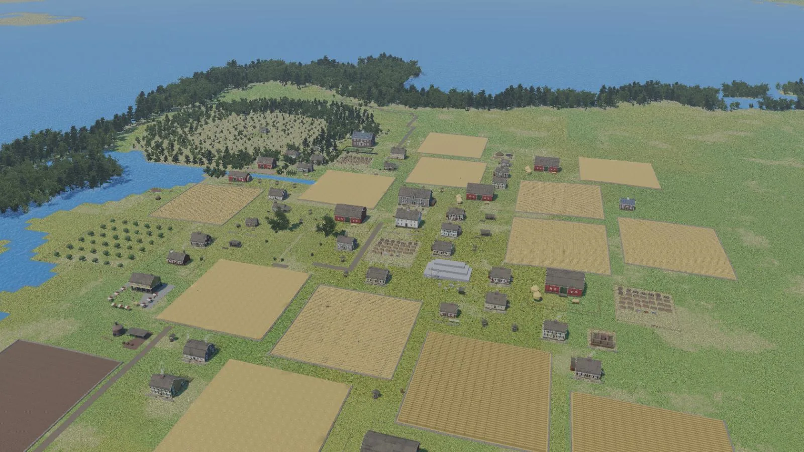
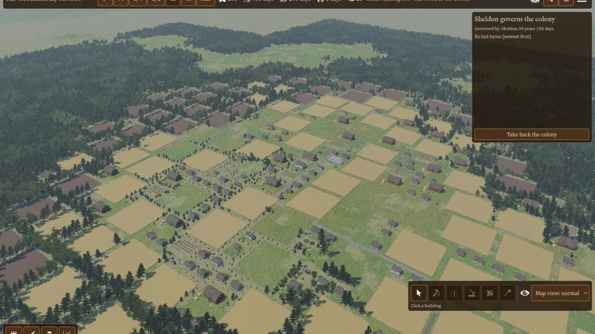
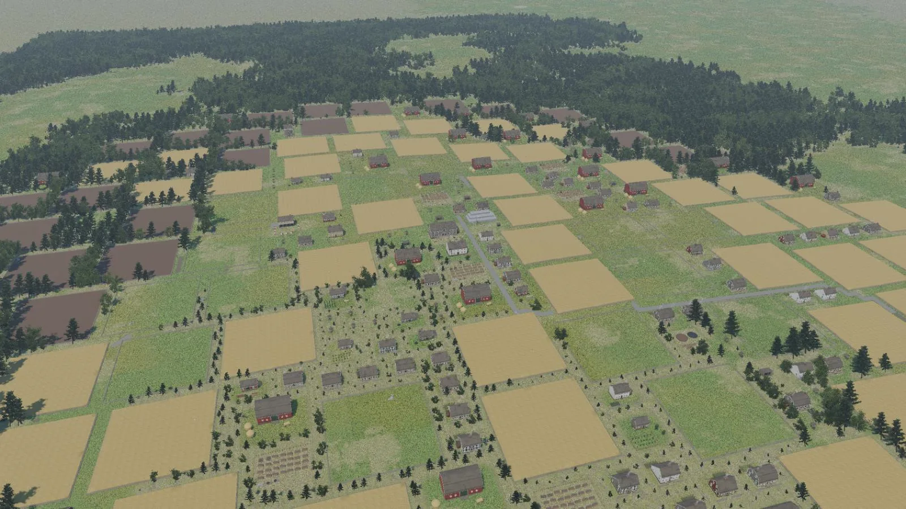
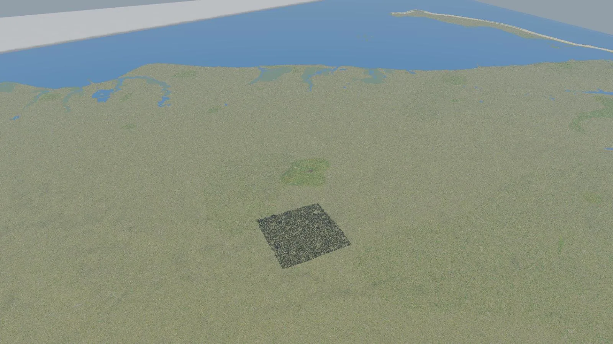
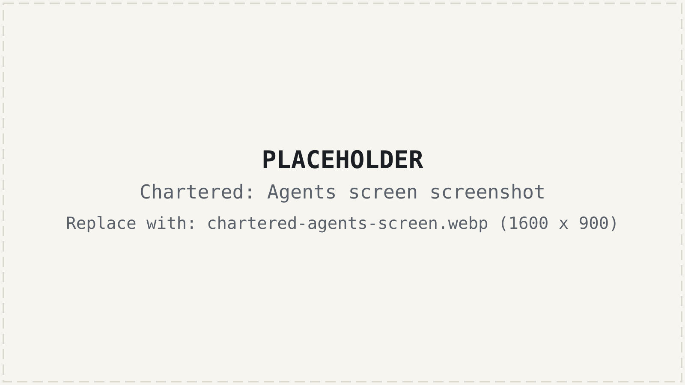

Released 1.0.1: out now, free
Chartered
Can a trained agent, limited to what a human player sees and does, keep a colony alive in games it has never played? Chartered is our own survival city-builder, inspired by Banished, designed so that people and the agent play exactly the same game.





Download
Chartered 1.0.1 is out now for Windows, free to play. It comes with Sheldon, a rule-based bot that can govern your colony, and you can train your own agents on the Agents screen. Our trained agents come in a later update.
Free for Windows 10 and 11, about 427 MB. Not yet code-signed: see Getting past SmartScreen below.
No accounts, no analytics; one optional update check.
What's in Chartered
- A colonial New England colony on a map of its own, or on Monmouth County, New Jersey, from real height data: towns, fields and orchards, pastures, trade, storms, floods, droughts and fire, and the Crown's taxes, in 3D.
- Production chains from grain and fish to bread, cheese, pies, cider and wine, wool and linen to tailored clothes, coal and steel tools, glass, roof tiles, and furniture.
- Sheldon, the bot that comes with the game, can govern the colony: hand it over with the crown on the top bar and take it back at any time.
- Train your own agents on the Agents screen, watch them learn, and see whether they beat Sheldon.
- Saves that load in seconds, autosaves each year, and Report a problem in Settings.
The question
Can an agent that plays with exactly the same commands and information as a human keep a colony alive, and meet efficiency targets, on random seeds and scenarios it has never seen?
Chartered ships with Sheldon, the rule-based bot. The trained agents that put this question to the test come in a later update: the trained governors are planned for 1.3.
How it's tested
The game runs as a simulation that needs no screen. The same seed and the same commands always produce the same game, so people, the agent and replays share one engine, and every result can be rerun and checked. A rule-based bot had to keep colonies alive on most seeds before any machine learning began, and the agent has to beat that bot. Scores come from many seeds the agent has never played, never from training rewards, so no single game decides the result. The agent sees only what a human player can see.
What's missing, and what's coming
- 1.0.2: Monmouth County polish (and its title clip back) and faster Monmouth starts; Sheldon dresses big colonies better (wool coats and tailored clothes) and keeps up with tools.
- 1.1: Chartered on Steam (with learning on an NVIDIA graphics card), a code-signed installer, and automatic updates.
- 1.2: the groundwork for mods and new content.
- 1.3: the trained governors: Governor Steve and three more, each with its own aim, and a bot that keeps the colony steady while you are away.
- 1.4 and on: more real maps (Jamestown and the James River, New York City, and more), mod support, and much more to build: more crops, orchard trees, and animals, and many more goods and production chains.
Technical details
System requirements
- Windows 10 or 11, 64-bit. Nothing else needs to be installed.
- Memory: 8 GB; 16 GB recommended. The Monmouth County map needs the most: about 6 GB for the game and its simulation together at their peak.
- Graphics: a DirectX 12 graphics card. On an older or slower card, choose Settings > Graphics > Low.
- Disk: about 1.4 GB.
- A real graphics card is needed: the game is not supported in virtual machines or Windows Sandbox.
Tested on an Intel Core i9-9900K with 32 GB of memory, an NVIDIA GeForce RTX 4070, and Windows 10.
Verifying your download
Chartered-Setup-1.0.1.exe, about 427 MB, version 1.0.1, published by Two Tail Technologies. The installer is not code-signed yet, so Windows may warn you before it runs: see Getting past SmartScreen.
SHA-256: 0e314debc2185c952c10fac1dd69911c6d0a3c0933fde1d6c66171ba060a33ca
To check that your download is complete and unchanged, open a Command Prompt in the folder you saved it to (in File Explorer, type cmd in that folder's address bar and press Enter), then run:
certutil -hashfile Chartered-Setup-1.0.1.exe SHA256
Compare the hash it prints with the SHA-256 above. If they don't match, delete the file and download it again.
Getting past SmartScreen
The installer is not code-signed yet, so when you run it after downloading, Windows may show "Windows protected your PC". To install anyway:
- Click "More info".
- Click "Run anyway".
Code signing comes in update 1.1.
Privacy
Chartered collects nothing about you. There are no analytics and no accounts. Saves, training runs, and logs stay on your own disk in %LOCALAPPDATA%\Chartered. "Report a problem" in Settings only makes a zip file for you to send yourself, if you choose to.
The game makes one network connection of its own: when it starts, it asks this website (hosted by GitHub) whether a newer version is out. Nothing about you, your computer, or your games is sent. Turn the check off in Settings ("Check for updates when the game starts") and the game makes no network connections at all.
License and mods
Chartered is free to play under its end-user license, which the installer shows and installs as EULA.txt. The license allows you to make, use, and share mods. The open-source components the game uses are listed in THIRD-PARTY-NOTICES.txt.
Installing and updating
The installer offers to install "only for me" (no administrator needed) or for all users, with Start menu and optional desktop shortcuts and an uninstaller.
From 1.0.1 on, the game tells you on its title screen when a new version is out, and "Update now" downloads it, checks it, installs it, and starts the game again. You can also run a new installer over the old one yourself. Either way, your saves stay in %LOCALAPPDATA%\Chartered when the game is updated or uninstalled.
Known issues
- Monmouth County takes about 40 seconds to make the first time and about 40 seconds more to start (on our test machine). Each map is kept afterward, so the same map starts faster next time.
- In Windows Sandbox and virtual machines the game can still close while making a map. It now says so the next time it starts, and "Report a problem" gathers the logs.
New in 1.0.1
- The game tells you when a new version is out, and "Update now" installs it and starts the game again, keeping your saves.
- At 4x and max the game slows itself rather than stutter, keeping 30 frames a second or more (Settings turns this off).
- New maps are made much faster, and the start screen shows each step as it goes. The same seed still makes exactly the same map.
- Before a map your computer may not have the memory for, the start screen says so.
- If the game closed without warning, it says so the next time it starts, and "Report a problem" now includes the game's own logs. If the simulation stops, the title screen can start it again.
- A building whose town has nowhere to store its goods no longer takes workers who then make nothing; it says why it is not working.
- Sheldon stops births while firewood runs short, and builds a barn or stockpile in each new town that needs one.
- The build menu shows every building of a category at once, in columns when there are many.